Nievel 1
¿Qué hace un administrador de base de datos?
Conoce cuáles son las funciones de un administrador de base de datos.
Lenguaje estructurado de consulta (SQL)
Recuerda las bases del lenguaje SQL.
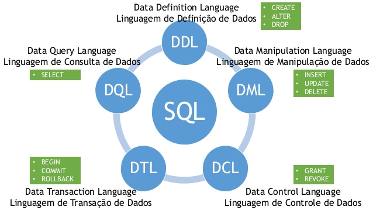
Seguridad y salud laboral
Seguir las medidas de seguridad te ayudará a ser más productivo en tu trabajo, mientras cuidas de tu salud.
Modelo relacional
Aprende las reglas para diseñar un modelo relacional. 
Construcción de un modelo relacional parte 1
Utiliza las necesidades del cliente para construir un modelo relacional.
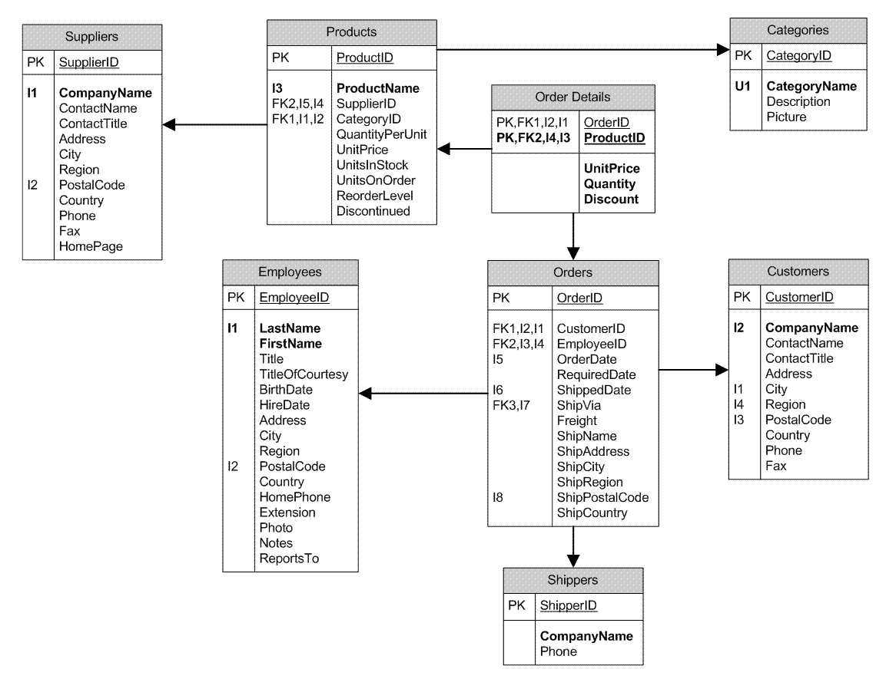
Construcción de un modelo relacional parte 2
Utiliza la simbología para crear cardinalidades y construir un modelo relacional.
Nievel 2
Almacén de datos
Conoce las cualidades de un almacén de datos.
Esquemas de almacenes de datos parte 1
Diseña almacenes de datos basado en el esquema estrella.
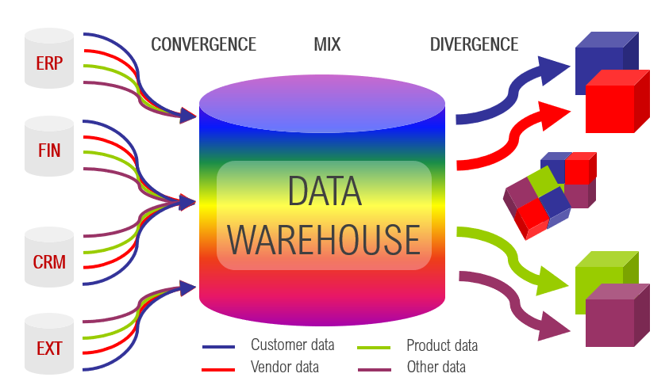
Esquemas de almacenes de datos parte 2
Diseña almacenes de datos basado en los esquemas copo de nieve y constelación.
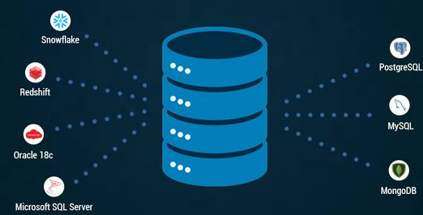
Software de diseño de base de datos
Utiliza un software de diseño para crear bases de datos.
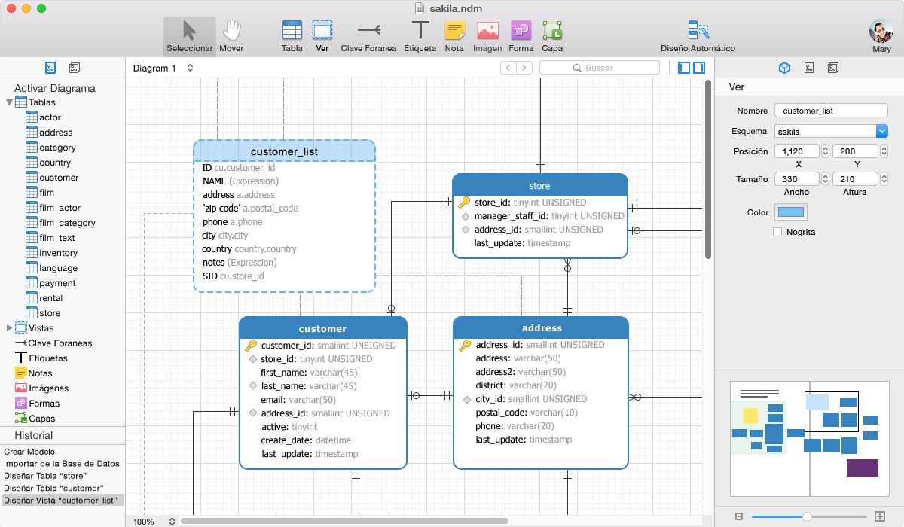
Funciones en SQL parte 1
Simplifica los programas utilizando funciones en SQL.
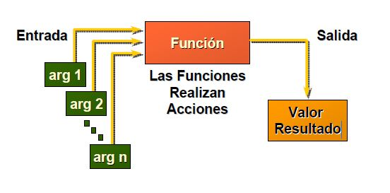
Funciones en SQL parte 2
Aplica los diferentes tipos de funciones en SQL.
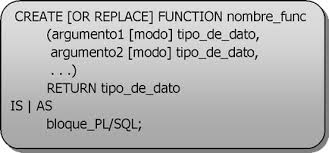
Triggers en SQL
Genera procesos automáticos aplicando triggers en SQL.
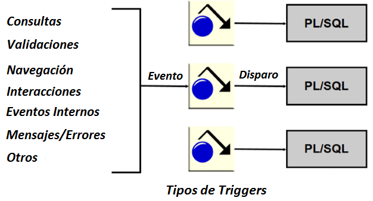
Procedimientos almacenados en SQL parte 1
Incorpora seguridad a las bases de datos por medio de procedimientos almacenados.
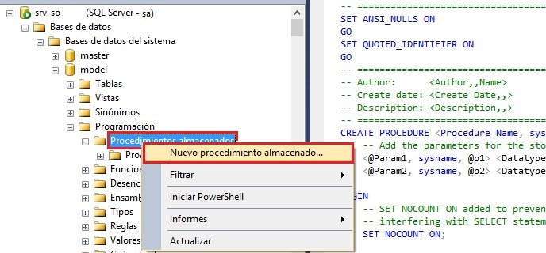
Procedimientos almacenados en SQL parte 2
Genera un mejor rendimiento en las bases de datos utilizando procedimientos almacenados.
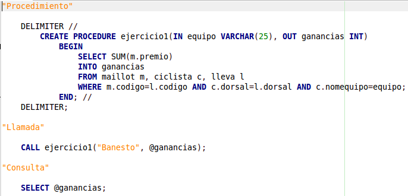
Transacciones
Evalúa si un conjunto de instrucciones se ejecutan al 100% usando transacciones.
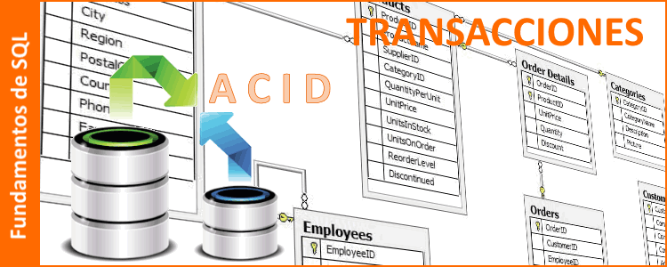
Consultas en SQL - Distinct
Eliminar registros repetidos en una consulta SQL aplicando la función DISTINCT.
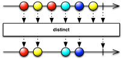
Consultas en SQL - Subconsultas
Selecciona información dentro de una consulta utilizando sub-consultas.
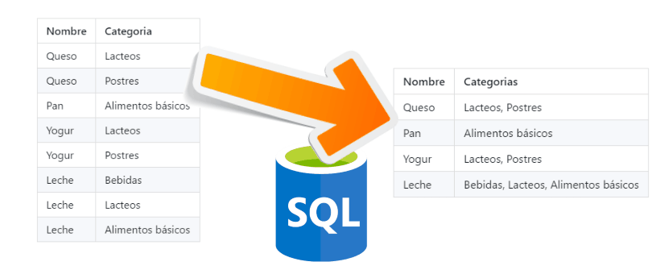
Consultas en SQL - Into
Guarda consultas en tablas nuevas utilizando la instrucción INTO.
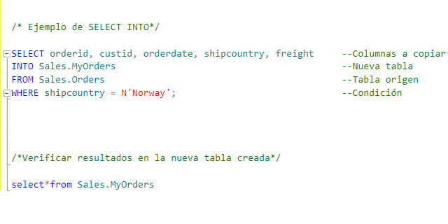
Consultas en SQL - Group by
Agrupa resultados de operaciones aritméticas por medio de la función GROUP BY 
Nivel 3
ETL - Extracción de datos en data warehouse
Extrae información de una base de datos utilizando un software de business intelligence.
ETL - Carga de datos en data warehouse
Carga información a un almacén de datos utilizando un software de business intelligence.
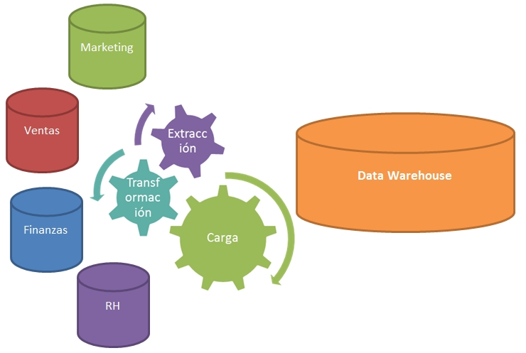
Cubo OLAP
Aprende los usos y las características de los cubos OLAP. 
Creación de cubos OLAP
Crea un cubo OLAP con ayuda del software business intelligence.
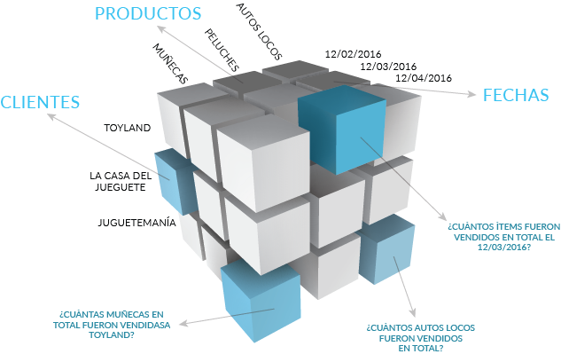
Nivel 4
Índices
Ordena y optimiza las consultas creando índices en las tablas de las bases de datos.
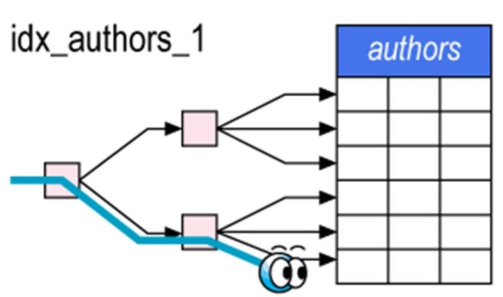
Profesionalización
Mejora y actualiza tus actividades como administrador de bases de datos.